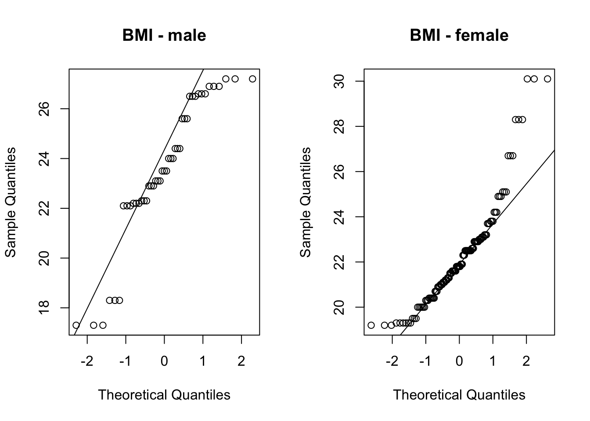
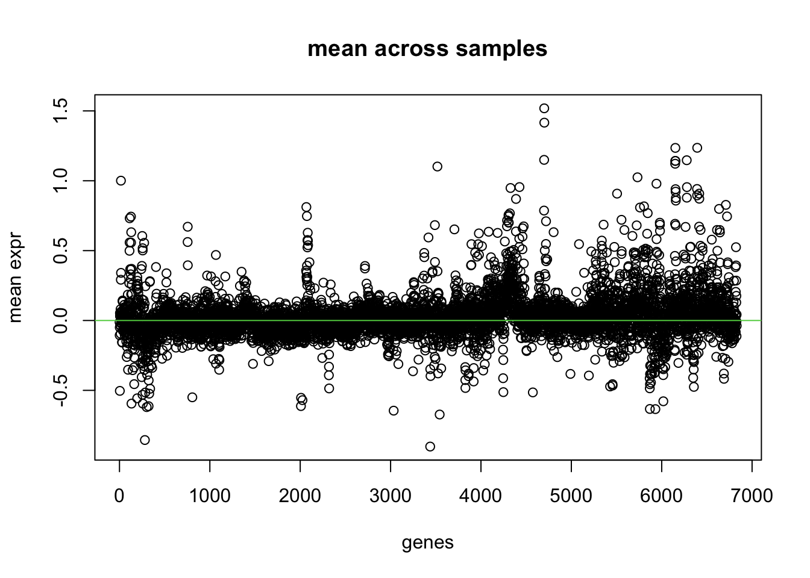
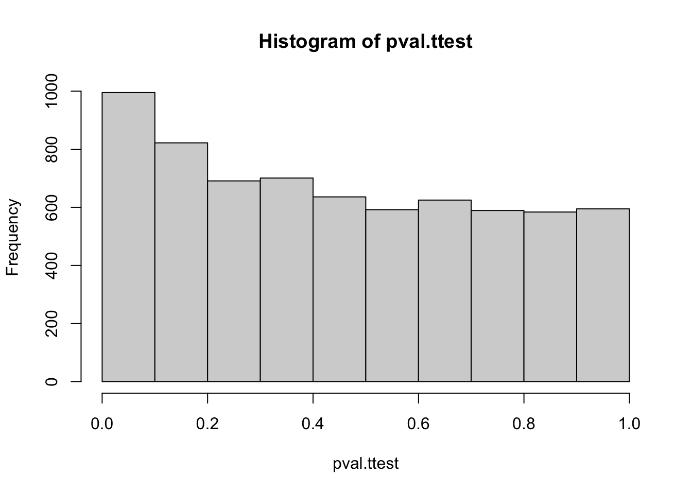
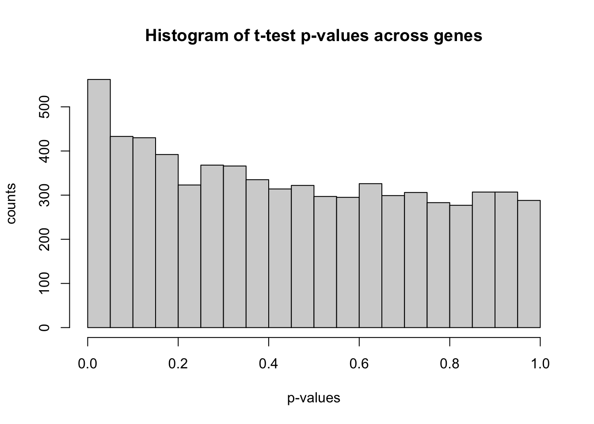

ID kjonn Alder BMI time tot.kol
Min. : 1.0 0: 45 Min. :19.0 Min. :17.30 t1:54 Min. : 1.00
1st Qu.:18.0 1:117 1st Qu.:22.0 1st Qu.:21.00 t2:54 1st Qu.: 9.00
Median :43.5 Median :25.0 Median :22.40 t3:54 Median :13.00
Mean :41.8 Mean :26.8 Mean :22.63 Mean :13.66
3rd Qu.:63.0 3rd Qu.:30.0 3rd Qu.:23.80 3rd Qu.:18.00
Max. :90.0 Max. :49.0 Max. :30.10 Max. :30.00
LDL.kol HDL.kol triglyserider Hexenal
Min. : 1.00 Min. : 1.000 Min. : 1.000 Min. : 1.00
1st Qu.:10.00 1st Qu.: 5.000 1st Qu.: 4.000 1st Qu.:11.00
Median :14.00 Median : 8.000 Median : 6.000 Median :24.00
Mean :14.03 Mean : 8.167 Mean : 7.457 Mean :24.27
3rd Qu.:18.00 3rd Qu.:10.750 3rd Qu.:10.000 3rd Qu.:37.00
Max. :27.00 Max. :19.000 Max. :21.000 Max. :52.00
Nonenal X8isoPGF.creat GSH GR
Min. : 1.00 Min. : 1.00 Min. :0.540 Min. : 2.800
1st Qu.:11.25 1st Qu.:12.25 1st Qu.:1.180 1st Qu.: 7.058
Median :24.50 Median :25.50 Median :1.500 Median : 7.900
Mean :24.18 Mean :25.76 Mean :1.523 Mean : 7.878
3rd Qu.:36.00 3rd Qu.:39.00 3rd Qu.:1.860 3rd Qu.: 8.740
Max. :52.00 Max. :54.00 Max. :2.890 Max. :10.580
NA's :7 NA's :8
GPx CAT X18_1_9 X18_2
Min. : 81.33 Min. : 6.950 Min. : 1.00 Min. : 1.00
1st Qu.:106.33 1st Qu.: 8.880 1st Qu.:14.00 1st Qu.:14.00
Median :115.75 Median : 9.595 Median :27.00 Median :27.00
Mean :115.99 Mean : 9.615 Mean :27.02 Mean :27.32
3rd Qu.:123.76 3rd Qu.:10.370 3rd Qu.:40.00 3rd Qu.:40.75
Max. :181.79 Max. :14.290 Max. :55.00 Max. :55.00
NA's :7 NA's :10
X18_3 X20_4 X20_5 X22_5
Min. : 1.00 Min. : 1.00 Min. : 1.00 Min. : 1.00
1st Qu.: 9.00 1st Qu.:13.25 1st Qu.:11.00 1st Qu.:11.00
Median :15.00 Median :26.50 Median :22.00 Median :18.00
Mean :16.49 Mean :25.93 Mean :22.54 Mean :18.26
3rd Qu.:23.00 3rd Qu.:38.00 3rd Qu.:33.75 3rd Qu.:26.00
Max. :42.00 Max. :53.00 Max. :49.00 Max. :39.00
X22_6
Min. : 1.00
1st Qu.:12.25
Median :25.00
Mean :24.85
3rd Qu.:36.00
Max. :52.00
We carry out a t-test to find out whether there is a significant difference for BMI between the two genders.
out <-t.test(data[which(data$kjonn==0),'BMI'],data[which(data$kjonn==1),'BMI'], alternative='greater')# much more clever syntaxout <-t.test(BMI ~ kjonn, data, alternative='greater')out
Welch Two Sample t-test
data: BMI by kjonn
t = 2.5952, df = 67.68, p-value = 0.005791
alternative hypothesis: true difference in means between group 0 and group 1 is greater than 0
95 percent confidence interval:
0.443913 Inf
sample estimates:
mean in group 0 mean in group 1
23.52667 22.28462
You can also just run the t-test and not save it to an object. But it is often useful to save it, because you have access to the p-values and do not need to copy paste it from the console.
t.test(BMI ~ kjonn, data, alternative='greater')
Welch Two Sample t-test
data: BMI by kjonn
t = 2.5952, df = 67.68, p-value = 0.005791
alternative hypothesis: true difference in means between group 0 and group 1 is greater than 0
95 percent confidence interval:
0.443913 Inf
sample estimates:
mean in group 0 mean in group 1
23.52667 22.28462
Check normality assumption.
# QQ-plots:par(mfrow=c(1,2)) # plot-window with two columnsqqnorm(BMI_group1, main ='BMI - male')qqline(BMI_group1)qqnorm(BMI_group2, main ='BMI - female')qqline(BMI_group2)

# test data for normalityshapiro.test(BMI_group1)
Shapiro-Wilk normality test
data: BMI_group1
W = 0.89644, p-value = 0.0007354
shapiro.test(BMI_group2)
Shapiro-Wilk normality test
data: BMI_group2
W = 0.88549, p-value = 5.161e-08
Exercise 2
Load the data from the file “Testfil_Rcourse.xlsx” and consider the variable vitD_v1.
plot the histogram of this variable and save it, and then also plot the boxplot of vitD_v1 stratified according to gender.
Does this variable look normally distributed?
Perform a t-test to verify that vitD_v1 is different across gender groups
Now we move to a typical large-scale biological data set which will be our running example throughout the course.
The NCI60 cancer cell line microarray data set consists of 6830 gene expression measurements on 64 cancer cell lines. It is available in the R package ISLR, which is the compendium R package to the book by James et al. (2013).
(It is not really a testing example, but we use it this way for illustration)
load('data/NCI60.RData')nci.labs <- NCI60$labs # Sample labels (tissue type)nci.data <- NCI60$data # Gene expression data set# some basic summarylength(nci.labs)
We create a grouping in 2 macro-groups of cancers, to test for gene expression differences across these 2 groups only. Those 2 groups should be relatively far in terms of genomic characteristics.
ind1 <-which(nci.labs=='BREAST'| nci.labs=='OVARIAN'| nci.labs=='PROSTATE')ind2 <-which(nci.labs=='LEUKEMIA'| nci.labs=='MELANOMA'| nci.labs=='NSCLC'| nci.labs=='RENAL') # blood, skin, lung, kidneycancer.type <-c(rep(1, length(ind1)), rep(2, length(ind2))) # we have two "cancer type" groupsmydata <- nci.data[c(ind1, ind2) , ]dim(mydata)
[1] 47 6830
Some descriptive statistics
# mean across patients for each genegenes.means <-apply(mydata, 2, mean) #1=rows, 2=columnsgenes.var <-apply(mydata, 2, var)plot(genes.means, xlab ='genes', main ='mean across samples', ylab ='mean expr')abline(h=0, col=3)

# we can try to compute the within group means and plot in different colors..genes.gr.means <-apply(mydata, 2, function(x){tapply(x, cancer.type, mean)})plot(genes.gr.means[1,], xlab ='genes', main ='within-group mean across samples', ylim =range(genes.gr.means), ylab ='mean expr')points(genes.gr.means[2,], col=2)abline(h=0)
x <- mydata[,1] #gene 1x1 <- x[which(cancer.type==1)] #select values for group 1x2 <- x[which(cancer.type==2)] #select values for group 2res <-t.test(x1, x2) #do the t-testres #show a summary of the test result
Welch Two Sample t-test
data: x1 and x2
t = 0.27023, df = 23.473, p-value = 0.7893
alternative hypothesis: true difference in means is not equal to 0
95 percent confidence interval:
-0.2562172 0.3333137
sample estimates:
mean of x mean of y
0.01433073 -0.02421753
res$p.value #extract the p-value
[1] 0.7893453
hist(pval.ttest)

# bit more details for nicer plottinghist(pval.ttest, breaks =1/alpha, xlab ='p-values', ylab ='counts', main ='Histogram of t-test p-values across genes')

The histogram of the p-values shows nearly uniform values but we see a slight peak around 0.
Multiple testing correction
# How many significant p-values (without any correction)sum(pval.ttest < alpha)
[1] 562
# how many expected false positives?Vexp <- alpha*dim(mydata)[2] # this is the expected value of V from the slidesVexp
[1] 341.5
We adjust the p-values
# Simple way of calculation adjusted p-values (using p.adjust()):pval.fwer <-p.adjust(pval.ttest, method ="bonferroni")pval.fdr <-p.adjust(pval.ttest, method ="BH")# Number of significant p-values after Bonferroni correctionsum(pval.fwer < alpha) # conservative
[1] 0
# Number of significant p-values after BH correctionsum(pval.fdr < alpha)
[1] 0
Conclusion: no significant difference in gene expression across the groups!
Exercise 4
Consider the gene expression data set “Ch10Ex11.csv” that consists of 40 tissue samples with measurements on 1,000 genes. The first 20 samples are from healthy patients, while the second 20 are from a diseased group.
Load in the data using read.csv(). You will need to select header=F.
Have a look at the data and describe them with appropriate descriptive measures.
Your collaborator wants to know which genes differ the most across the two groups.
Suggest a way to answer this question, and apply it here.
---title: "R Lab (day 2): Multiple Testing"format: html: code-fold: false code-tools: true---Download datasets [here](https://github.com/ocbe-uio/course_med3007/tree/main/lab/data) or from Canvas.R scripts* [Code](https://github.com/ocbe-uio/course_med3007/blob/main/lab/code/MED3007_Lab1.R)* [Code (solution)](https://github.com/ocbe-uio/course_med3007/blob/main/lab/code/MED3007_Lab1_exercise_solution.R)## Exercise 1: brain data```{r}#| label: ttest-brain-loaddata#| warning: false#| echo: trueload('data/data_brainshake.RData')data <-as.data.frame(mydatanew)head(data)```Some descriptive statistics of each variable```{r}#| label: ttest-brain-summary#| warning: false#| echo: truesummary(data) # summary for each variablenames(data) # column names```Ddescriptive plots: boxplot and histogram (for one specific variable across groups)```{r}#| label: ttest-brain-plots#| warning: false#| echo: truepar(mfrow=c(1,2)) # plot 2 figures side by sideboxplot(BMI ~ kjonn, data)boxplot(tot.kol ~ kjonn, data)hist(data$BMI)# histogramBMI_group1 <- data[which(data$kjonn==0),'BMI']BMI_group2 <- data[which(data$kjonn==1),'BMI']hist(BMI_group1) #menhist(BMI_group2) #females```### t-testWe carry out a t-test to find out whether there is a significant difference for BMI between the two genders.```{r}#| label: ttest-brain-ttest1#| warning: false#| echo: trueout <-t.test(data[which(data$kjonn==0),'BMI'],data[which(data$kjonn==1),'BMI'], alternative='greater')# much more clever syntaxout <-t.test(BMI ~ kjonn, data, alternative='greater')outnames(out)out$p.valuepvalue <- out$p.valuepvalue```You can also just run the t-test and not save it to an object. But it is often useful to save it, because you have access to the p-values and do not need to copy paste it from the console.```{r}#| label: ttest-brain-ttest2#| warning: false#| echo: truet.test(BMI ~ kjonn, data, alternative='greater')```Check normality assumption.```{r}#| label: ttest-brain-qq#| warning: false#| echo: true# QQ-plots:par(mfrow=c(1,2)) # plot-window with two columnsqqnorm(BMI_group1, main ='BMI - male')qqline(BMI_group1)qqnorm(BMI_group2, main ='BMI - female')qqline(BMI_group2)# test data for normalityshapiro.test(BMI_group1)shapiro.test(BMI_group2)```## Exercise 2Load the data from the file "Testfil_Rcourse.xlsx" and consider the variable `vitD_v1`.1. plot the histogram of this variable and save it, and then also plot the boxplot of vitD_v1 stratified according to gender.Does this variable look normally distributed?2. Perform a t-test to verify that `vitD_v1` is different across gender groups(Solution see R script [MED3007_Lab1_exercise_solution.R](https://github.com/ocbe-uio/course_med3007/blob/main/lab/code/MED3007_Lab1_exercise_solution.R))## Exercise 3: NCI60Now we move to a typical large-scale biological data set which will be our running example throughout the course.The NCI60 cancer cell line microarray data set consists of 6830 gene expression measurements on 64 cancer cell lines. It is available in the R package ISLR, which is the compendium R package to the book by James et al. (2013).(It is not really a testing example, but we use it this way for illustration)```{r}#| label: ttest-nci60-loaddata#| warning: false#| echo: trueload('data/NCI60.RData')nci.labs <- NCI60$labs # Sample labels (tissue type)nci.data <- NCI60$data # Gene expression data set# some basic summarylength(nci.labs)dim(nci.data)table(nci.labs)```We create a grouping in 2 macro-groups of cancers, to test for gene expression differences across these 2 groups only. Those 2 groups should be relatively far in terms of genomic characteristics.```{r}#| label: ttest-nci60-process#| warning: false#| echo: trueind1 <-which(nci.labs=='BREAST'| nci.labs=='OVARIAN'| nci.labs=='PROSTATE')ind2 <-which(nci.labs=='LEUKEMIA'| nci.labs=='MELANOMA'| nci.labs=='NSCLC'| nci.labs=='RENAL') # blood, skin, lung, kidneycancer.type <-c(rep(1, length(ind1)), rep(2, length(ind2))) # we have two "cancer type" groupsmydata <- nci.data[c(ind1, ind2) , ]dim(mydata)```Some descriptive statistics```{r}#| label: ttest-nci60-summary#| warning: false#| echo: true# mean across patients for each genegenes.means <-apply(mydata, 2, mean) #1=rows, 2=columnsgenes.var <-apply(mydata, 2, var)plot(genes.means, xlab ='genes', main ='mean across samples', ylab ='mean expr')abline(h=0, col=3)# we can try to compute the within group means and plot in different colors..genes.gr.means <-apply(mydata, 2, function(x){tapply(x, cancer.type, mean)})plot(genes.gr.means[1,], xlab ='genes', main ='within-group mean across samples', ylim =range(genes.gr.means), ylab ='mean expr')points(genes.gr.means[2,], col=2)abline(h=0)```### t-test for genes```{r}#| label: ttest-nci60-test#| warning: false#| echo: truealpha <- .05pval.ttest <-apply(mydata, 2, function(x){t.test(x[which(cancer.type==1)], x[which(cancer.type==2)])$p.value})```Investigate closely on one gene```{r}#| label: ttest-nci60-onegene#| warning: false#| echo: truex <- mydata[,1] #gene 1x1 <- x[which(cancer.type==1)] #select values for group 1x2 <- x[which(cancer.type==2)] #select values for group 2res <-t.test(x1, x2) #do the t-testres #show a summary of the test resultres$p.value #extract the p-valuehist(pval.ttest)# bit more details for nicer plottinghist(pval.ttest, breaks =1/alpha, xlab ='p-values', ylab ='counts', main ='Histogram of t-test p-values across genes')```The histogram of the p-values shows nearly uniform values but we see a slight peak around 0.### Multiple testing correction```{r}#| label: ttest-nci60-pval#| warning: false#| echo: true# How many significant p-values (without any correction)sum(pval.ttest < alpha)# how many expected false positives?Vexp <- alpha*dim(mydata)[2] # this is the expected value of V from the slidesVexp```We adjust the p-values```{r}#| label: ttest-nci60-pvaladjust#| warning: false#| echo: true# Simple way of calculation adjusted p-values (using p.adjust()):pval.fwer <-p.adjust(pval.ttest, method ="bonferroni")pval.fdr <-p.adjust(pval.ttest, method ="BH")# Number of significant p-values after Bonferroni correctionsum(pval.fwer < alpha) # conservative# Number of significant p-values after BH correctionsum(pval.fdr < alpha)```Conclusion: no significant difference in gene expression across the groups! ## Exercise 4Consider the gene expression data set "Ch10Ex11.csv" that consists of 40 tissue samples with measurements on 1,000 genes. The first 20 samples are from healthy patients, while the second 20 are from a diseased group.1. Load in the data using read.csv(). You will need to select header=F.2. Have a look at the data and describe them with appropriate descriptive measures.3. Your collaborator wants to know which genes differ the most across the two groups.Suggest a way to answer this question, and apply it here.(Solution see R script [MED3007_Lab1_exercise_solution.R](https://github.com/ocbe-uio/course_med3007/blob/main/lab/code/MED3007_Lab1_exercise_solution.R))